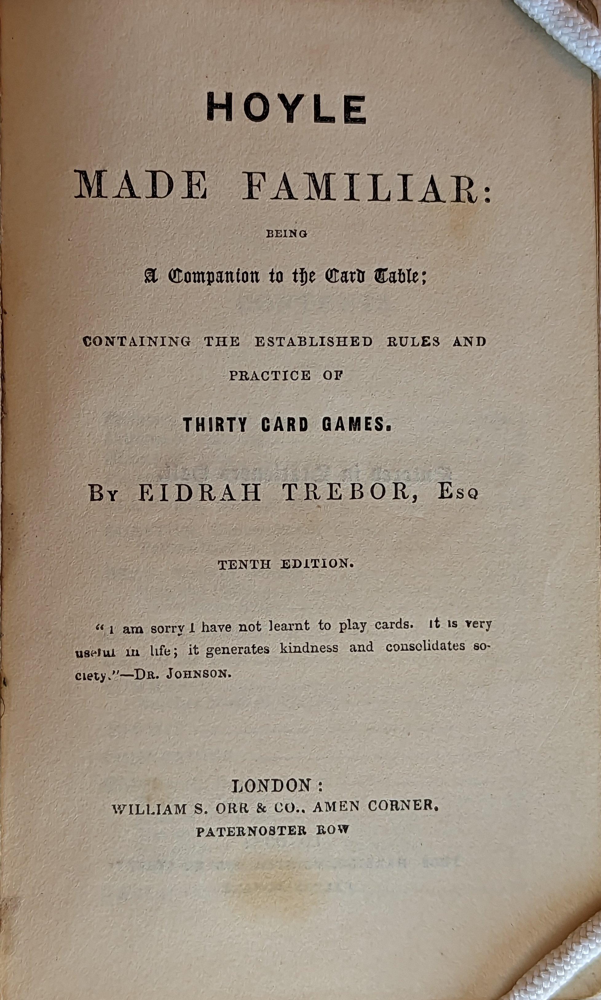

A Descriptive Bibliography of Edmond Hoyle
Copyright © 2014-26 by David Levy
(page updated 2026-05-01)User Guide
Hardie.10
Hoyle Made Familiar, Wm. S. Orr & Co., tenth impression (“tenth edition”), 1850.
 |
Title: | HOYLE | MADE FAMILIAR: | BEING | A Companion to the Card Table: | CONTAINING THE ESTABLISHED RULES AND | PRACTICE OF | THIRTY CARD GAMES. | By EIDRAH TREBOR, Esq | TENTH EDITION. | “I am sorry I have not learnt to play cards It is very | useful in life; it generates kindness and consolidates so-|ciety.” Dr. Johnson. | LONDON: | Wm. S. ORR & CO , AMEN CORNER. | PATERNOSTER ROW. |
| Collation: | 24o: [A]6 B–G8 H8(−H8 missing, blank?) [$1 signed]; 61 leaves, pp. [iii–vi] vii [viii–x], [1] 2–112 [113–114] |
| Contents: | Signature (Page) Reference | Contents | Signature (Page) Reference | Running Titles |
| A1r (iii) | title | |||
| A1v (iv) | ‘Entered in Stationers Hall.’ | |||
| A2r–A3r (v–vii) | ‘CONTENTS. | [...]’ | A2v–A3r (vi–vii) | ‘CONTENTS.’ | |
| A3v (viii) | blank | |||
| A4r (ix) | ‘ADVERTISEMENT. | [...]’ | |||
| A4v (x) | blank | |||
| A5r–H3v (1–106) | see Hardie.1 A1r–G5v (1–106) | A5v–H3v (2–106) | see Hardie.1 A1r–G5v (1–106) | |
| H4r (107) | see Hardie.2 G6r (107)) | H4r (107) | see Hardie.2 G6r (107)) | |
| H4v–H6v (108–112) | see Hardie.4 G6v–G8v (108–112) | H4v–H6v (108–112) | see Hardie.4 G6v–G8v (108–112) | |
| H7r–H7v (113–114) | blank |
| Plates: | Frontispiece engraving: Two couples at card table with two females spectators. Drawn by J. Stewart. Engraved
on steel by W. H. Lizars Title engraving: extra engraved title undated with imprint Edinburgh published by Stirling & Kenney & Co. Wm. S. Orr & Co. London. on H1r(101) woodblock: a tapis or cloth covering the Rouge et Noir table |
| Publisher: | W. S. Orr & Co. |
| References: | Rather 153 |
| Copies Seen: | BFl [I.795/TREB (b1163075)]; TNJ [GV1243.H2 A10]; Levy [1913] |
| Other Copies: | OC [795 H26.1] |
| Notes: | The same setting of type as Hardie.1 with updated preliminaries, the material on short whist from Hardie.2 and new material on whist from Hardie.4.The book has been imposed differently from earlier impressions as is evident from the change in collation formula and signatures. The three surviving copies of the book have three different title pages and must represent different impressions. The title page transcription is from the Vanderbilt copy. The Cincinnati copy has the imprint "William S. Orr. and Co." The Levy copy has "William S. Orr & Co. and a colophon on A1r and H6v "London: Thos. Harrild, Printer, Silver Street, Falcon Square." |